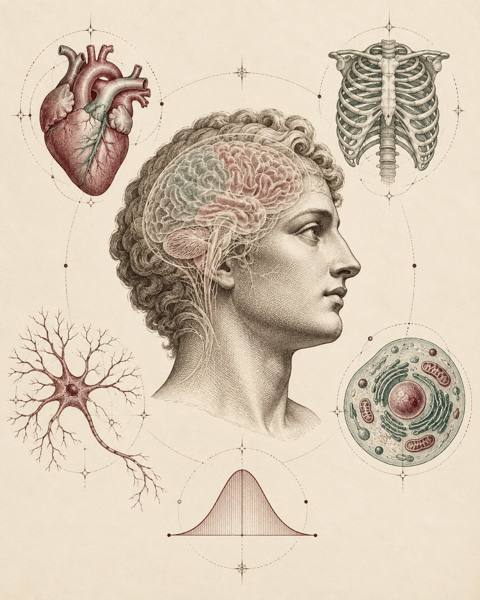

পরিসংখ্যান / ব্যাখ্যা
ডেটা কী বলছে, আর কী বলছে না?
পরিচিত উদাহরণে শিখুন অনিশ্চয়তা, প্রমাণ ও পরিসংখ্যানের ভাষা।
পরিসংখ্যানের পাঠ →পরিসংখ্যান · গবেষণা · সমাজ · বই ও সংস্কৃতি
কৌতূহল নিয়ে আসুন। সহজ ভাষায় পড়ুন। নিজের মতো করে ভাবুন।
পরিসংখ্যান, মানুষ ও সমাজকে জানার এই যাত্রায় আপনাকে স্বাগতম।
বিজ্ঞান · মানুষ · সমাজ
সহজ বাংলায় ব্যাখ্যা ও পাঠ
বিভাগসমূহ
বাংলা ব্যাখ্যা · পরিচিত English term
ছয়টি ছোট পাঠ, regression-এর ইন্টারঅ্যাকটিভ গ্রাফ, বিশ্লেষণের চেকলিস্ট এবং খুঁজে নেওয়ার মতো ফ্রি বই ও টুল।
পাঠগুলো দেখুন →০২ / পড়া ও ভাবনাঅধিকার, দৈনন্দিন জীবন ও সমাজ নিয়ে লেখা। সম্পাদিত লেখা এবং উৎসভিত্তিক আলোচনা আলাদা পরিচয়ে।
লেখাগুলো পড়ুন →০৩ / বইয়ের সঙ্গীমানুষ, সমাজ ও পরিসংখ্যানের ইতিহাস নিয়ে নির্বাচিত বই; প্রতিটির সঙ্গে আলোচনার প্রশ্ন ও মূল পরিচিতির লিংক।
বই বেছে নিন →০৪ / দেখা ও আলোচনাগল্পের পেছনের প্রশ্নগুলো নিয়ে ভাবুন। পরিচিতি, ট্রেলার এবং প্রাসঙ্গিক উৎস একসঙ্গে দেখুন।
দেখার তালিকা →প্রথমবার এসেছেন?
পরিসংখ্যানের প্রথম পাঠ পড়ুন → রেখার ঢাল বদলে গ্রাফ দেখুন → নিজের ভাষায় কী বুঝলেন বলুন। একবারে সব পড়ার প্রয়োজন নেই।
প্রথম পাঠ পড়ুন →আরও এগোতে চাইলে: Advanced notes · শিক্ষকদের পাঠতালিকা
আমার পরিচয়
আমি মো. ইকরামুল হক খান। University of Nevada, Las Vegas (UNLV)-এ Mathematical Sciences বিষয়ে মাস্টার্স করছি; আমার পড়ার ক্ষেত্র Applied Statistics। পাশাপাশি graduate teaching assistant হিসেবে শিক্ষার্থীদের পড়াশোনায় সহায়তা করি। উদাহরণ ও গ্রাফ দিয়ে পরিসংখ্যান সহজ করে বোঝাতে ভালো লাগে।
Making Sense with Ikramul আমার নিজের উদ্যোগে তৈরি শেখার জায়গা। এখানে পরিসংখ্যান, গবেষণা ও সমাজ নিয়ে আলোচনা করি। প্রথম সিরিজ Statistically Speaking-এ পরিসংখ্যানের মৌলিক ধারণাগুলো আছে। সময়ের সঙ্গে আরও বিষয় যুক্ত হবে।
আমার স্বপ্ন · দীর্ঘমেয়াদি ব্যক্তিগত ভাবনা
আমার স্বপ্ন, বাংলাদেশকে কেন্দ্র করে পরিসংখ্যান, গণিত, কম্পিউটেশন ও জীবচিকিৎসাবিজ্ঞানের সংযোগে একটি স্বাধীন গবেষণা প্রতিষ্ঠান গড়ে তোলা। সেখানে তরুণ গবেষকেরা মেধা বিকাশের সুযোগ পাবেন, বিশ্বজুড়ে সহযোগিতা করবেন এবং জ্ঞান, সততা ও মানবিকতার মাধ্যমে মানুষের কল্যাণে অবদান রাখবেন।
দেবব্রত বসুর বুদ্ধিবৃত্তিক উত্তরাধিকার থেকে অনুপ্রাণিত এই ভাবনার কেন্দ্রে থাকবে গবেষণার স্বাধীনতা, সমান সুযোগ, সহায়ক পরিবেশ ও জবাবদিহিমূলক পরিচালনা।
আমার স্বপ্নের বিস্তারিত পড়ুন ↗এটি আমার দীর্ঘমেয়াদি ব্যক্তিগত স্বপ্ন। টেনিউর-ট্র্যাক একাডেমিক পদে যোগ দেওয়ার পর প্রয়োজনীয় সহযোগিতা ও সক্ষমতা বিবেচনা করে সক্রিয় উদ্যোগ শুরু করার ইচ্ছা রয়েছে।
আরও একটি জ্ঞানচর্চার পরিসর
বিজ্ঞান ও যুক্তি, ইতিহাস ও ঐতিহ্য, সাহিত্য ও শিল্প, সমাজ ও সমতা, দর্শন ও ধর্মচিন্তা এবং রাষ্ট্র ও ভবিষ্যৎ নিয়ে অনুসন্ধান। ইউরোপীয় রেনেসাঁর অনুসন্ধিৎসা ও সৃজনশীলতা থেকে অনুপ্রেরণা নিয়ে, বাংলার নিজস্ব বুদ্ধিবৃত্তিক ঐতিহ্যের সঙ্গে বিশ্বজুড়ে জ্ঞানচর্চার সংযোগ গড়ে তোলার প্রয়াস।
পূর্ববঙ্গ নবজাগরণে পড়ুন ↗আপনার কথাও শুনতে চাই
লেখা কেমন লাগল? কোনো ভুল পেয়েছেন? কোন বিষয়ে আরও জানতে চান? আপনার কথা জানালে সাইটটি আরও ভালো করতে পারব।
বাংলা ফিডব্যাক ফর্ম খুলুন ↗নাম ও ইমেইল দেওয়া বাধ্যতামূলক নয়। উত্তর শুধু পরিচালকের কাছে থাকবে; এটি পাবলিক কমেন্ট নয়। ফর্মটি Google Forms-এ খুলবে।